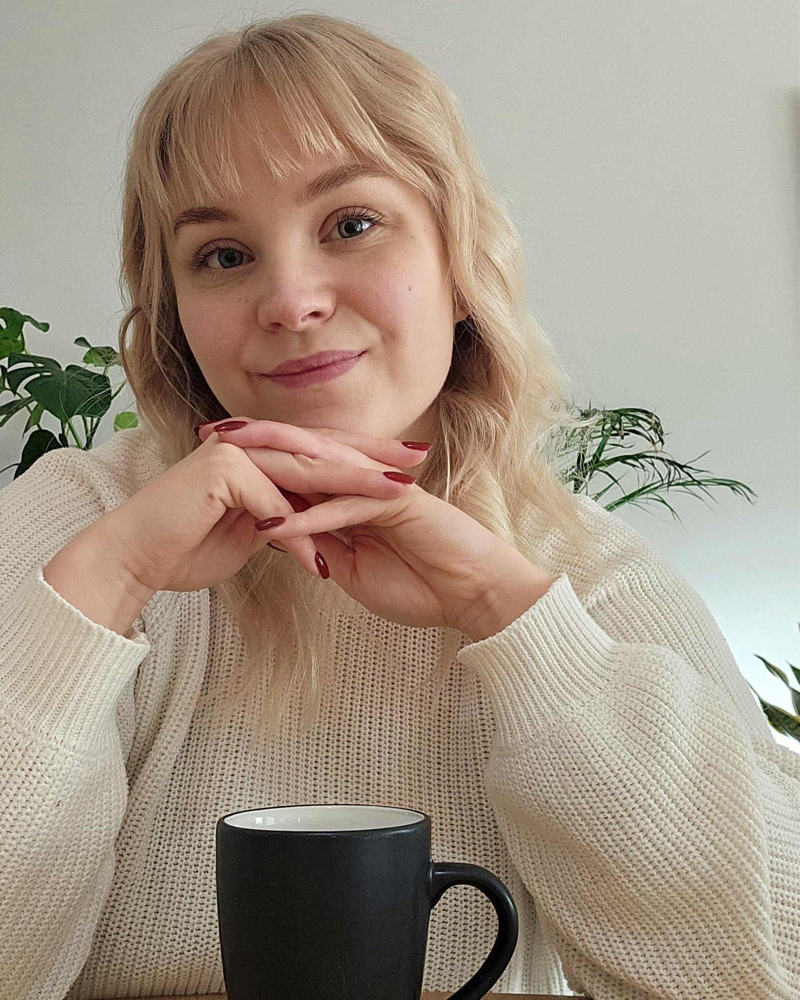

Vastaan tuotekokonaisuuksista Buildiella — asiakastutkimuksesta liiketoiminta-arvoon ja AI-ominaisuuksien kehittämiseen asti.

I'm a product management professional based in Tampere, Finland, building digital products at the intersection of business, technology, and user needs. With six years at Buildie Oy — growing from technical support to owning product areas — I specialise in customer research, product definition, and bringing AI-powered features to market. I'm happy to work in English.
Täysin uudistettu digitaalinen turvallisuustarkastustyökalu infrarakentamiseen. Lanseeraus täytti johdon myyntitavoitteet ensimmäisen vuoden aikana ja synnytti puhujapyyntöjä toimialan järjestöiltä.
@-maininnoin ja push-notifikaatioilla toimiva kommunikaatiotyökalu suoraan valokuviin. Pilotointivuoden käytetyin uusi kommunikaatioominaisuus, levisi orgaanisesti lähes kaikkiin asiakasyrityksiin.
Ensimmäinen tuotantoon viety tekoälyominaisuus. Valokuvien automaattinen kategorisointi vähentää inhimillisiä virheitä ja auttaa hallitsemaan suuria materiaalimääriä työmailla.